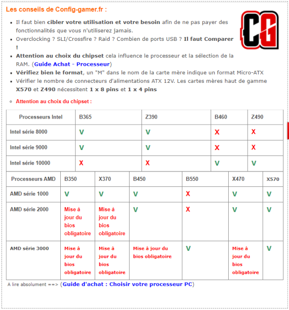

Assembler son premier ordinateur
Le processeur
Nommé aussi CPU, le processeur est le cœur de l’ordinateur, celui qu’interprète et exécute les instructions. Par conséquent, avoir un processeur qui est assez puissant pour répondre à nos besoins, autant pour le travail que le gaming, est indispensable. De nos jours, acheter des processeurs récents est très avantageux pour le prix et la performance qu’ils offrent en retour. C’est pourquoi nous recommandons des sockets (plus bas) modernes qui supportent le la mémoire vie à haute fréquence. Il faut se demander, quelles tâches je veux que mon CPU soit capables de supporter ? Deux grandes marques sortent du lot depuis de nombreuses années pour combler nos attentes et il faut choisir. Intel ou AMD?

Intel (socket LGA)
Pour la performance remarquable dans une seule tâche à la fois, que ça soit un jeu, du montage de vidéo ou du 3D, nous recommandons Intel. Il existe de nombreux modèles i3, i5, i7 et i9. Plus le chiffre après le « i » est grand, plus le CPU va être performant et coûteux. Sous le i5, l’expérience de gaming est moins optimale. Mais pour un ordinateur qui sert à exécuter des tâches pas trop exigeantes comme surfer sur le net, utiliser la suite Office, faire ses devoirs, les i3 vont faire un bon travail. Les i7 et les i9 sont des processeurs de professionnels, streamers ou gamer de très haute qualité. Bien-sûr, plus le CPU est vieux, moins il va être puissant, comparé à ses générations au-dessus.
AMD (socket AM4)
Pour un bon compromis entre le prix et la performance tout en faisant plusieurs tâches en même temps, AMD est parfait. De plus, cette marque offre des processeurs overclockables de base, sans à avoir à acheter de modèle X ou K comme chez Intel. Les Ryzen 3, 5, 7 et 9 se présentent par le même principe que les modèles Intel. Malgré la grande compétition, il n’y a pas de mauvais choix en termes de marque. Le seul choix très important qu’on doit faire est le modèle.
Le refroidissement du CPU
Il y a 2 manières communes de refroidir son processeur : l’air et l’eau
L'air (air cooling)
C’est le classique du refroidissement. Avec une fiabilité imbattable, un prix bas et de très bonnes performances, choisir un heatsink avec une ou 2 fan fixées dessus et une excellente option. Il faut juste faire attention que le tout soit compatible avec le socket du processeur. Un refroidissement d’au moins 120mm est conseillé pour des températures correctes.
L'eau (water cooling)
Ceux qui compte faire faire de grandes prouesses à son CPU choisissent souvent le watercooling. Il présente des performances impressionnantes face aux processeurs qui chauffent le plus et il est assez silencieux, ce qui en charme plusieurs. Par contre, son prix plus élevé et la complexité à l’installer est à considérer. Il faut aussi faire attention que le tout soit compatible avec le socket du processeur.
La carte mère
La carte mère est ce qui relie tous les autres composants ensembles. Elle ne porte pas son nom pour rien! Après avoir choisi le processeur, il faut ensuite choisir une carte-mère qui possède le même socket que le modèle de CPU choisi. On trouve cette caractéristique dans les spécifications de l’article. Ensuite, il faut choisir un format. Le classique pour les grandes tours est l’ATX. Un format avec beaucoup d’options et de connectiques. Sinon, pour des tours plus petites, le Mini-ATX est un bon compromis entre taille et options. Il existe aussi le MINI-ITX pour un format minuscule qui est intéressant pour le transport, mais qui ne comprend souvent pas beaucoup de connectiques (USB, PCIe,). De plus, il faut prendre soin de choisir un modèle avec 4 slots de mémoire vive (sauf pour un MINI-ITX) pour laisser place à l’upgrade. Le chipset (exemple B450, Z490) est aussi un élément important à ne pas négliger. Choisir un chipset compatible avec l’overclocking et la mémoire vive haute fréquence comme ceux mentionnés plus haut est un choix intelligent pour des gamers qui veulent aller chercher le maximum de performances le maximum de performances. Voici les conseils du site Config-gamer.fr sur le sujet. À noter que le contenu s’applique aussi pour un PC de travail
La mémoire vive
Connue aussi sous le nom de RAM, la mémoire vive sert à enregistrer temporairement les informations pour les fournir au processeur. Elle est très influente sur la rapidité et la fluidité de l’ordinateur. La RAM se mesure en GB, en barrettes de 2, 4, 8, ou 16GB. De nos jours, avec les cartes mères et les processeurs récents, la génération de RAM majoritairement utilisée est la DDR4. Elle offre une grande possibilité d’overclocking et de haute fréquence. Pour le travail et pour le gaming, 16 GB est notre recommandation. 8GB va être le minimum pour Windows et d’autres petites tâches. Au prix que coûte la ram de ces temps si, 16 vaut vraiment plus la peine. Et pour les streamers ou les adeptes du multi-task, 32GB est bien assez. Du côté de la fréquence, le minimum est 2133 MHz mais plus la fréquence est haute, plus la vitesse est augmentée. Nous recommandons au moins 3000 MHz. Attention toutefois, les constructeurs de cartes-mères indiquent une fréquence maximale au-delà de laquelle le surplus de MHz sera inutile. Donc, il est utile de consulter les spécifications de la carte-mère. Source : materiel.net
La carte graphique
La carte graphique est ce qui permet d’utiliser plusieurs écrans et générer une performance graphique assez grande pour jouer à des jeux exigeants en 3D
Pour ceux qui ont besoin de travailler avec plusieurs écrans sans jouer à des jeux vidéo, une carte à faible coût comme par exemple une GT 710 ou une GTX 1030 et la meilleure option. C’est carte ont plusieurs ports HDMI, ce qui convient parfaitement pour les écrans.
Pour le gaming, c’est plus au besoin du gamer. Cela dépend de la résolution à laquelle on veut jouer. Il ne faut pas oublier qu’il un processeur qui va supporter la puissance de la carte graphique. (voir choix écran). Bien sûr, il y a encore une fois 2 fabricants de processeur graphique populaire. AMD (les Radeon RX, VEGA) et NVIDIA (les GTX, RTX) De nos jours, pour du 1080p (le plus courant), une carte de 6 GDDR6 peut faire tourner pas mal tous les jeux en high/ultra. Une RTX 2060 ou une GTX 1070ti peuvent être de bons exemples. Pour les streamers et les gamers de plus haute résolution il existe des modèles de cartes plus performants, comme les RTX 2080ti, RTX 3070, RTX 3080. Les équivalent en AMD existent aussi. Voici des liens pour acheter les cartes abordables qui valent le plus leur prix selon nous.
Le bloc d'alimentation
Le bloc d’alimentation (power supply) va permettre d’alimenter tous les composants de l’ordinateur, comme il est écrit dans son nom. Voici un site qui permet de calculer la puissance du power supply requise selon les composants choisis. https://outervision.com/power-supply-calculator
On peut choisir des blocs d’alimentation modulaires, semi-modulaire, ou non-modulaire. Pour le budget, le non-modulaire est le meilleur choix. Ensuite, pour ceux qui veulent sauver de l’espace et pouvoir retirer des connecteurs qui ne servent pas dans le build. Cependant, il est particulièrement plus cher. Un semi modulaire est un bon entre 2, avec un prix un peu moins haut. Il permet de retirer certains connecteurs parfois inutiles. Nous conseillons de choisir un modèle de power supply particulièrement bien coté sur le site d’achat. C’est très important, car un power supply cheap peut, si il brise, briser d’autres composants importants avec lui.
Le boitier
Le boitier (case) est un élément qui paraît plus esthétique que pratique, mais c’est faux. Il faut choisir un bon case qui nous permettra d’assembler les composants choisit dedans de manière à ce que tout rentre correctement à sa place. La première chose à vérifier est le format de la carte mère. Il faut choisir un case en fonction de ce format, c’est très important. Ensuite, il faut vérifier la grosseur de la carte graphique et du refroidissement pour être certain que ca rentre en terme de largeur, longueur et profondeur. Idéalement, un case avec plusieurs emplacement pour rajouter des ventilateur pour que l’air circule est un choix judicieux pour quelqu’un qui compte faire travailler fort son ordi, comme un gamer ou un streamer. Nous conseillons au moins un ventilateur de 120mm devant et derrière le case, pour faire rentrer l’air par devant et la faire ressortit par derrière. C‘est la circulation optimale. Ainsi, ceux qui veulent se rajouter des ventilateurs peuvent s’en rajouter. Il est très important de les fixer du bon sens, pour diriger l’air vers la bonne direction. Pour ceux qui ne sont pas certain, habituellement, les ventilos fixés dans le haut du boitier sont des fan d’exhaust (échappement), donc ils doivent faire sortir l’air.